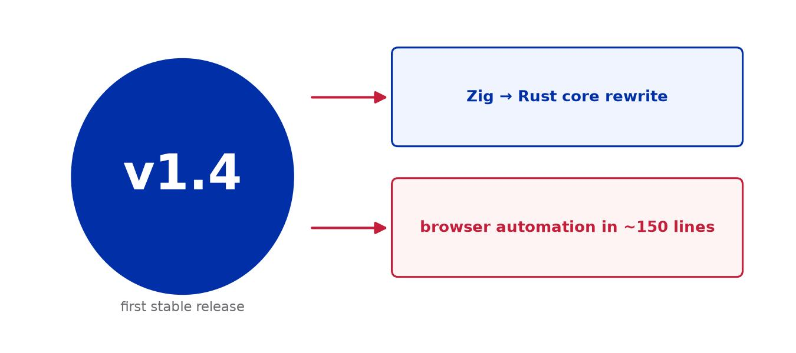
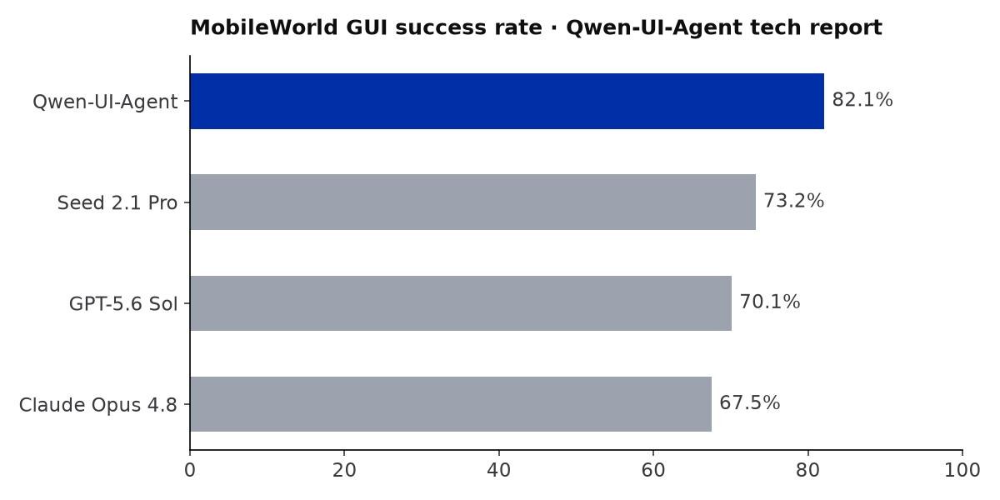

GPT-6 Astra has fully completed Valve's classic physics puzzle game Portal across 48 chambers in 23 hours and 43 minutes with zero human intervention.
This is a true demonstration of long-horizon execution rather than a static benchmark test. The model continuously maintained state goals, handled environmental failures, and retried autonomously.This marks a significant milestone where AI systems can operate reliably across hours of complex physical reasoning.
Simultaneously, OpenAI released its internal research acceleration report, confirming researchers now utilize multiple autonomous coding interns, targeting full AI research autonomy by March 2028.

GPT-6 Astra demonstrates autonomous long-horizon planning and spatial execution. Source: Evaluation report.
Zhipu AI officially made GLM-5-128K available for enterprise workloads, cutting inference costs by 40% via coordinated hardware-software scheduling while preserving high-precision needle retrieval.
Frontier Chinese models are rapidly embedding into core enterprise workflows.Cost-effective long-context capabilities are becoming the primary selection criterion for real-world enterprise RAG systems.
Sierra and Princeton University jointly released τ²-Bench, evaluating agent behavior in complex customer workflows. Claude Opus 5 agents achieved a 23.9% success rate against human experts' 82.2%.
This stark divergence highlights that continuous policy compliance, dynamic memory tracking, and emotional handling remain severe bottlenecks for deployed agents.Domain-specific benchmark suites reveal real-world execution failures far better than generic leaderboards.
OpenBMB open-sourced MiniCPM5-2B, packing native 131K context support and edge device efficiency.
In edge computing, parameter efficiency surpasses brute force scale.The real competition for on-device models lies in convincing users they can avoid recurring cloud API fees.

MiniCPM5-2B enables efficient long-context processing directly on edge devices. Source: OpenBMB.
"The AGI narrative has always been about invention. But we must now ask: once invented, who gets to decide how it is used?"
François Chollet · Creator of Keras · X / Twitter
"Tracking workflows across Claude and ChatGPT is becoming increasingly challenging; context management is now a genuine cognitive load."
Ethan Mollick · Professor at Wharton · TechCrunch AI
Unitree unveiled UnifoLM-X2-1.0, showcasing an end-to-end world model making continuous real-time movement and tactical decisions without human teleoperation.
Shifting from scripted remote control to predictive physics models represents a major leap for embodied agents in dynamic environments.
UnifoLM-X2-1.0 drives dynamic humanoid response loops through real-time predictive world models. Source: Unitree.
Reports indicate Anthropic has committed to procurement contracts worth $517 billion securing over 14.8 GW of capacity through the next decade.
This massive commitment confirms that frontier lab strategies remain anchored on compute scaling as the decisive driver of model intelligence.
Orange River Valley, South Africa. Fertile irrigated floodplains cut through arid plateau terrain in rhythmic agricultural patterns. No servers, no inference costs—just gravity, sunlight, and seasonal cycles sustaining terrestrial life.

Orange River Valley, South Africa · NASA / NISAR · 28.50°S, 20.60°E
Natural river basins carve lifelines across ancient tablelands.
Stay curious, keep exploring.